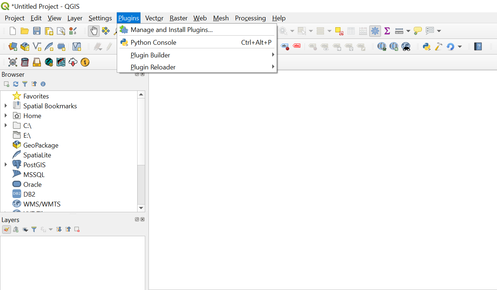
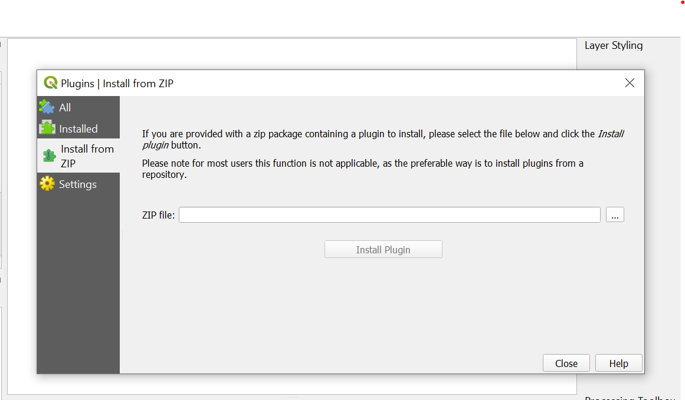
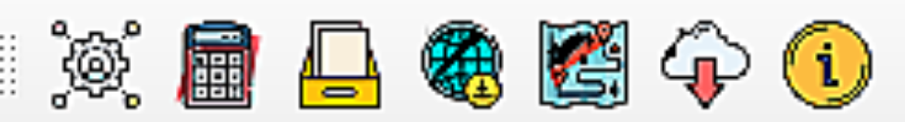

Installing the toolbox¶
There are different ways to install LDMS, depending on whether you want to install the stable version (recommended) or the development version.
Installing the development version (recommended)¶
To install from within QGIS, first launch QGIS, and then go to Plugins in the menu bar at the top of the program and select Manage and install plugins.
Then search navigate to Install from ZIP and upload the LDMS plugin zipfile
If your plugin has been installed properly, there will be a menu bar in the top left of your browser that looks like this:
